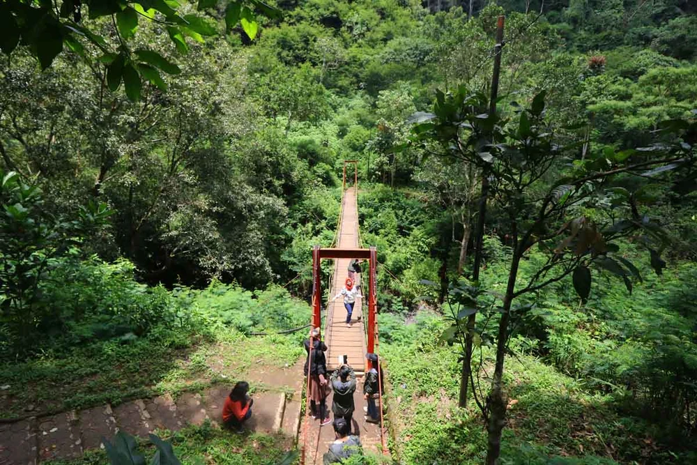
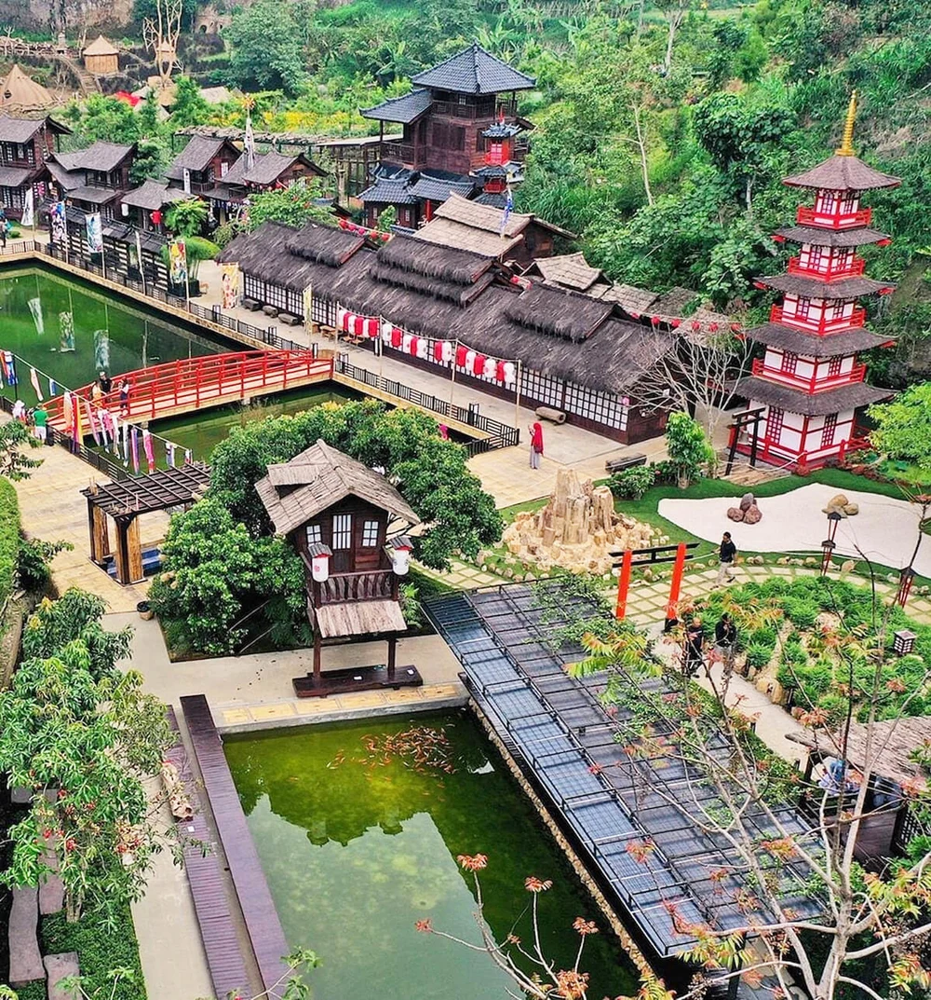

About Us
Selamat datang di website kami! Website kami merupakan sumber informasi lengkap tentang sejarah kota Bandung dan tempat-tempat wisata menarik
yang bisa Anda kunjungi. Dari peninggalan sejarah yang kaya hingga keindahan alam yang menakjubkan, kami hadir untuk membawa Anda menjelajahi
setiap sudut kota Bandung yang penuh pesona.
Kami menyediakan berbagai artikel menarik yang mengulas perjalanan sejarah Bandung dari masa ke masa, serta panduan lengkap untuk menikmati
tempat wisata yang tak boleh dilewatkan saat berada di kota ini. Baik Anda seorang wisatawan, sejarawan, atau warga lokal yang ingin mengenal
lebih dalam tentang kota Bandung, kami harap Anda menikmati setiap momen kunjungan Anda di website ini.
Sejarah Kota Bandung
Sejak tahun 1998, pemerintah kota bandung menetapkan tanggal 25 september sebagai "hari jadi kota bandung". Sebelumnya terdapat beberapa
pandangan yang mengidentifikasi hari jadi kota bandung dengan pembentukan gemeente bandung yaitu tanggal 1 april 1906, sehingga beberapa waktu
lamanya tanggal tersebut diperingati sebagai hari jadi kota bandung. Menyadari pentingnya pelurusan sejarah, sejak tahun 1997 pemerintah kota
bandung berusaha untuk menetapkan hari jadi kota bandung yang benar berdasarkan pembuktian dan fakta sejarah.
Kota Bandung tidak didirikan bersamaan dengan pembentukan Kabupaten Bandung, yang terjadi pada pertengahan abad ke-17 dengan Bupati pertama,
Tumenggung Wirangunangun, beribukota di Krapyak (Dayeuhkolot sekarang). Ketika Bupati ke-6, R.A. Wiranatakusumah II, berkuasa (1794-1829),
Hindia Belanda mengambil alih kekuasaan dari kompeni dengan Gubernur Jenderal Herman Willem Daendels. Daendels membangun jalan raya pos dari
Anyer ke Panarukan pada tahun 1808 untuk memudahkan transportasi, yang melibatkan Bupati setempat termasuk Bupati Bandung. Pada 25 Mei 1810,
Daendels meminta Bupati Bandung memindahkan ibukota ke dekat jalan raya pos.
Namun, Bupati Bandung sudah merencanakan pemindahan sebelumnya dan memilih lokasi strategis di tepi barat sungai Cikapundung dan tepi selatan
jalan raya pos. Pemindahan dilakukan akhir 1808/awal 1809, dengan Bupati dan rakyatnya pindah ke lokasi baru yang dikenal sebagai Kebon Kawung
sekarang. Kota Bandung didirikan atas prakarsa Bupati R.A. Wiranatakusumah II, bukan Daendels, dan diresmikan sebagai ibukota Kabupaten
Bandung pada 25 September 1810. Tanggal ini diakui sebagai "Hari Jadi Kota Bandung" melalui Peraturan Daerah No. 35 tahun 1998, menggantikan
tanggal 1 April yang sebelumnya diperingati sebagai ulang tahun kota, tanggal pembentukan Gemeente Bandung pada 1906.

Braga
Braga adalah ikon kota Bandung, dan enggak mungkin liburan ke Bandung kalau enggak menyempatkan diri sekadar lewat atau bahkan singgah untuk
menikmati hypenya Braga. Dari restoran, bar, sampai coffee shop kekinian yang berdiri di dalam gedung tua yang terjaga, semuanya ada di
Braga.

Taman Hutan Raya Ir. H. Djuanda
Sesuai namanya, Taman Hutan Raya Ir. H. Djuanda memang bukan sekadar taman - ini adalah hutan kota yang terletak di area Dago Pakar. Taman
yang kerap disebut Tahura oleh warga Bandung ini juga jadi salah satu tempat wisata di Bandung favorit - termasuk bagi masyarakat kota
Bandung sekalipun.

The Great Asia Africa Lembang
Satu tempat, tapi punya area instagramable bertema banyak negara? Kamu bisa menemukannya di The Great Asia Africa Lembang. Terletak di Jalan
Raya Lembang, tepat berseberangan dengan Farmhouse Lembang yang lebih dahulu populer, The Great Asia Africa adalah salah satu tempat wisata
di Lembang yang tengah naik daun saat ini.

Floating Market Lembang
Floating Market Lembang adalah salah satu tempat wisata di Lembang lainnya yang sangat populer! Terletak tak jauh dari Alun-Alun Lembang,
Floating Market Lembang langsung populer begitu dibuka pertama kalinya dulu. Punya danau yang cukup luas, destinasi wisata yang satu ini
terkenal dengan berbagai stand tempat berjualan makanan yang dibuat di atas perahu kecil.